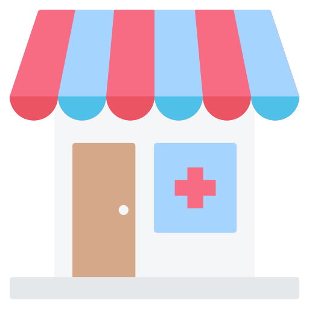

SISTEMA ERP
Sua vida em um único lugar.
Gerencie todas suas obrigações, atividades e necessidades em um único lugar.
Facilite e torne a sua vida mais simples, quer dizer, nós fazemos isso pra você.

Problemas
Hoje no Brasil diversos hospitais e clinicas reclamam de um problema que está presente em todo lugar, a desorganização.
A desorganização causa muitas confusões e estresse em diversos lugares, inclusive em hospitais. Em hospitais a desorganização é um tema muito constante, sendo citado inúmeras vezes por pacientes direcionando reclamações para diversas areas dos hospitais, como:
Farmácia
Diversos medicamentos são perdidos devido a data de valdidade que não é monitorada da melhor forma,causando um imenso prejuízo aos hospitais.
Central de Agendamento
Pacientes enfrentam dificuldades para marcar consultas e exames devido à desorganização, resultando em atrasos nos atendimentos e aumento do estresse.
Controle de Estoque
A falta de controle adequado causa perdas de insumos por vencimento, além de gerar falta de materiais essenciais e desperdício de recursos.

Objetivo
Temos como objetivo simplificar e centralizar a gestão de processos hospitalares como:
- Controle de estoque.
- Agendamentos médicos.
- Controle de validade de medicamentos.
Esse sistema visa integrar diferentes departamentos e facilitar a tomada de decisões, melhorando a eficiência operacional do hospital.
Clique para Testar as Funcionalidades
Pedir Medicamento
Agendamento Médico
Verificar Estoque
Totem de Autoatendimento
O sistema terá tambem a parte do paciente, onde o mesmo podera executar processos sozinho, sem depender de um auxilio de algum funcionario do hospital, tornando a visita mais rápida, veja algumas das funcionaldades:
Agendamento

Sistema capaz de marcar consultas, exames e cirurgias. Tudo de forma simples, dando possibilidadede de o proprio paciente realizar essa tarefa quando chegar ao hospital, sem precisar pegar filas. O sistema é integrado com o ERP, para organizar todos agendamentos em um único lugar.
Retirada de Exame
O totem de autoatendimento permite que pacientes retirem seus laudos médicos de forma rápida e prática. Basta se identificar com seu CPF, visualizar o laudo e até mesmo imagens e imprimir na hora. Simples, seguro e sem filas!
Localização Interna
Um mapa inteligente e interativo é disponibilizado para paciente. O mapa é capaz de mostrar o caminho para locais especificios, como salas, quartos ou setores. Dessa forma o mesmo consegue se locomover melhor durante sua visita ao hospital.
Público Alvo
Laboratórios de exames
Hospitais
Clínicas médicas
Centros cirúrgicos
Impactos Positivos e Negativos
Positivos:
- Redução de erros humanos em processos manuais.
- Otimização do tempo na gestão de estoques e agendamentos.
- Melhor controle sobre a validade de insumos, reduzindo perdas.
- Centralização das informações, promovendo maior transparência e eficiência.
Negativo:
- Custo inicial elevado para implementação.
- Necessidade de treinamento da equipe para uso do sistema.
- Dependência de tecnologia, podendo gerar transtornos em caso de falhas no sistema ou internet.
Toda a ideia tem como objetivo principal agilizar o tempo de visita dos pacientes em hospitais, clinicas ou qualquer ambiente da saúde e o auxiliar a organização interna dessas instituições tornando um ambiente mais simples de trabalhar, e tambem auxiliar com gastos e compras desses locais.
Aplicação
O sistema seria instalado em servidores locais ou na nuvem para que possa ser acessado por diferentes setores do hospital. Equipamentos como computadores e tablets seriam utilizados para alimentar e consultar dados no sistema. Integração com sistemas já existentes no hospital, como software de contabilidade ou gestão financeira, caso aplicável.
Totem de Autoatendimento
Sistema de Armazenamento de Dados